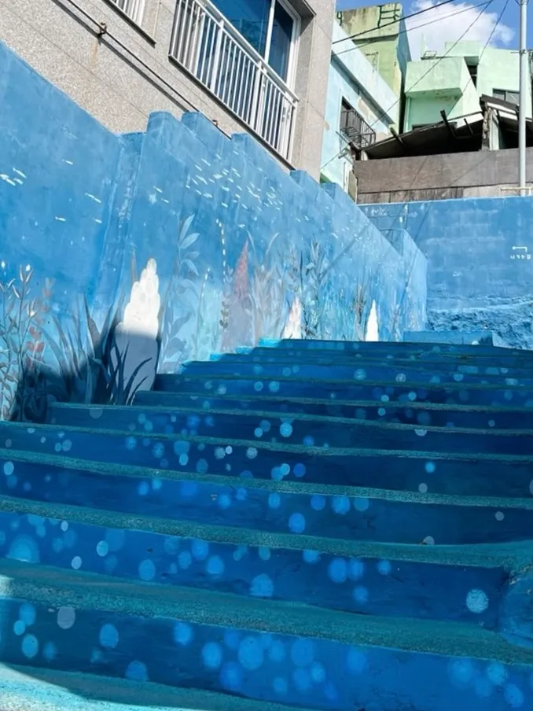
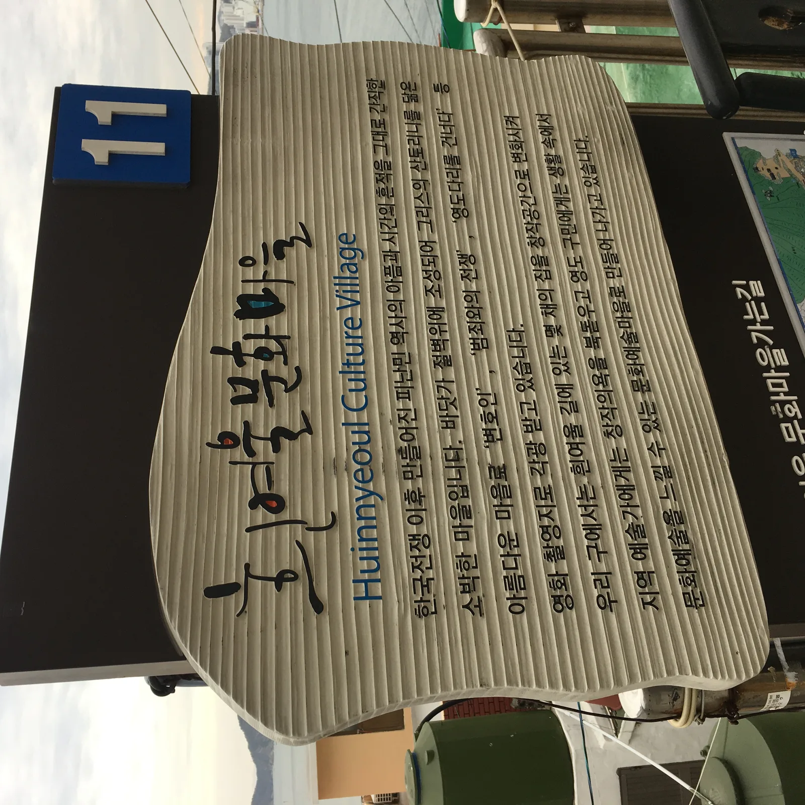
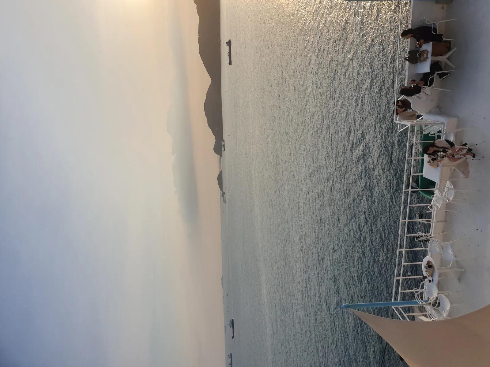
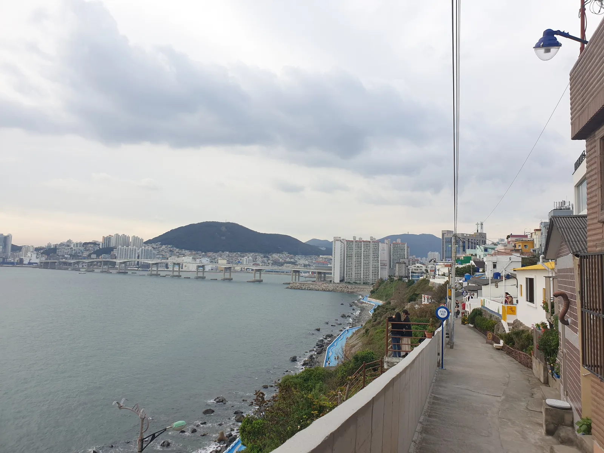
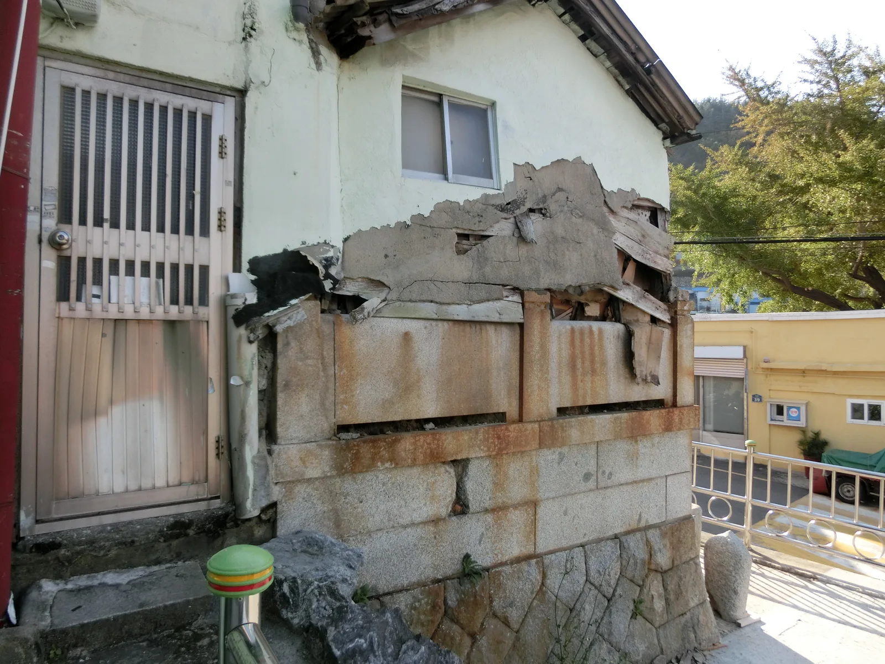
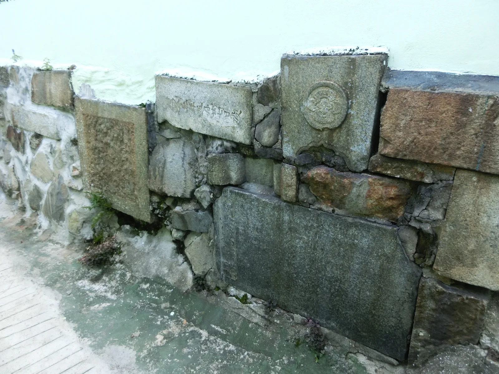
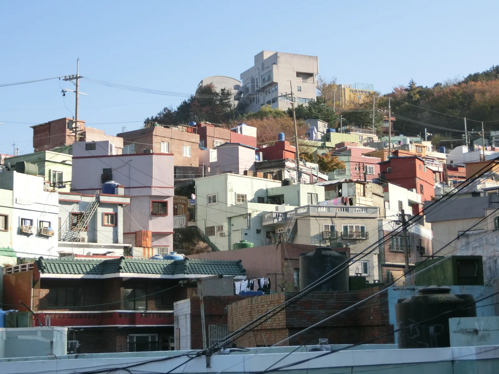
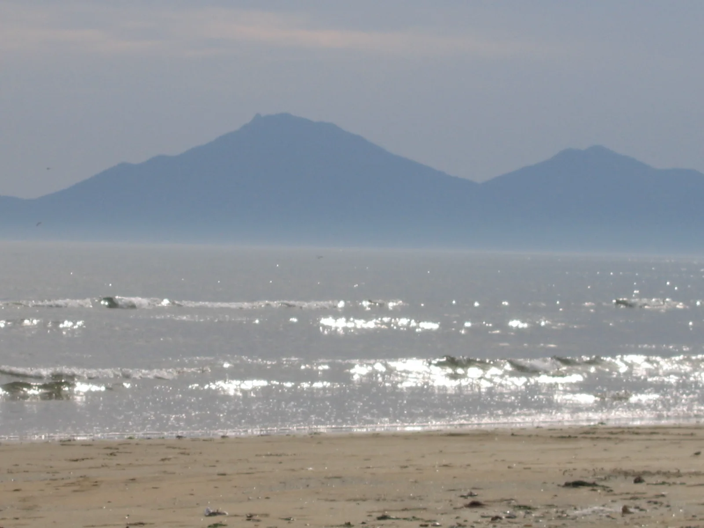
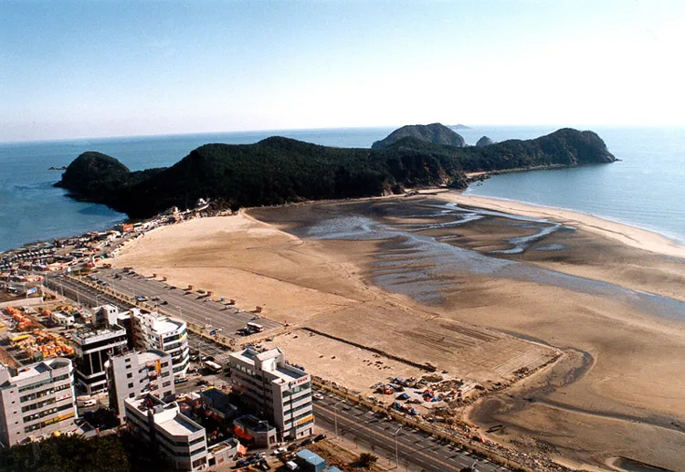
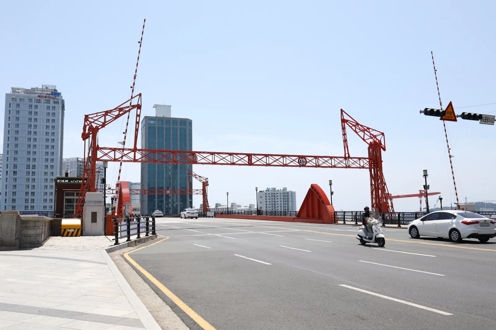

▲ 영도 절영해안산책로에서 바라본 남항대교 방향 풍경. 흰여울문화마을은 이 산책로를 낀 절벽 마을이다 사진=Wikimedia Commons (CC BY-SA 4.0)
1. 왜 이 코스인가
해운대와 광안리가 부산 여행의 대표 이미지라면, 영도 흰여울문화마을과 서구 아미동 비석문화마을, 사하구 다대포 몰운대는 그보다 한 걸음 조용한 부산이다. 셋 다 해안이나 절벽을 낀 지형이라 풍경은 못지않지만, 대형 관광버스가 들어가기 어려운 좁은 골목과 산비탈에 자리 잡고 있어 단체 관광객보다는 자가용이나 도보 여행자에게 맞는 곳들이다. 세 곳 모두 6·25 전쟁 전후 피란과 정착의 역사를 품고 있다는 공통점도 있다.
다만 세 곳은 행정구역이 서로 다르다는 점을 먼저 짚어둘 필요가 있다. 흰여울문화마을은 영도구, 아미동 비석문화마을은 서구, 몰운대는 사하구 다대동에 속한다. 이 글은 세 곳을 하나로 묶은 지역 명소 소개가 아니라, 원도심 서쪽 해안선을 따라 차로 이어서 돌아볼 수 있는 드라이브 코스로 구성한 것이다.
2. 흰여울문화마을과 절영해안산책로 — 절벽에 새긴 피란의 기록
흰여울문화마을은 영도구 영선동 봉래산 자락, 절영로 250 일원의 절벽 위에 자리한 마을이다. 마을 이름은 봉래산 기슭에서 흘러내리는 물줄기가 바다와 만날 때 이는 흰 포말이 눈 내리는 모습 같다 하여 붙었다. 지금의 마을 모습이 갖춰진 계기는 6·25 전쟁이다. 피란민들이 갈 곳 없이 가파른 절벽 위에 터를 잡고 집을 지어 올리면서 마을이 형성됐고, 이후 영화 촬영지로도 알려지며 도시재생사업(2015~2020년, 사업비 약 37억 5천만 원)을 거쳐 지금의 문화예술마을로 정비됐다.

▲ 흰여울문화마을 골목의 벽화 계단. 좁고 가파른 계단길이 많아 걷기 편한 신발이 필요하다 사진=Wikimedia Commons (CC BY-SA 4.0)
마을 초입의 흰여울문화마을 안내센터에서 지도를 받아 골목 사이 갤러리와 카페를 둘러본 뒤, 마을과 나란히 이어지는 절영해안산책로로 내려서는 동선이 기본이다. 산책로는 약 3km 구간으로 입장료 없이 연중 개방되며, 바다와 붙어 걷는 구간이 많아 파도가 높은 날에는 안전에 유의해야 한다. 걷는 도중 남항대교와 건너편 봉래산·자갈치 방향 풍경이 트이는 지점들이 있어 사진 명소로도 알려져 있다.

▲ 마을 초입에 세워진 흰여울문화마을 안내판. 한국전쟁 이후 피란민들이 만든 마을이라는 유래가 적혀 있다 사진=Wikimedia Commons (CC BY-SA 4.0)
| 구분 | 내용 |
|---|---|
| 주소 | 부산 영도구 절영로 250 일원(영선2동) |
| 산책로 | 절영해안산책로 약 3km, 무료, 연중 개방 |
| 주차 ① | 절영해안산책로 입구 노상 공영주차장 — 10분당 200원, 1일 최대 4,700원(면수 제한적, 성수기 만차 잦음) |
| 주차 ②(대안) | 신선3동 공영주차장 — 10분당 100원, 1일 최대 2,400원. 요금이 더 저렴하지만 마을까지 도보 거리가 늘어남 |
| 주의 | 마을 내부 골목은 폭이 좁고 경사가 급해 차량 진입이 사실상 불가능하다. 지정 주차장에 세우고 걸어서 둘러보는 것을 권장 |
| 문의 | 영도구청 신성장전략과 051-419-4752 |

▲ 흰여울문화마을의 절벽 카페에서 바라본 노을. 저녁 시간대는 테라스 좌석이 빠르게 찬다 사진=Wikimedia Commons (CC0)

▲ 흰여울문화마을의 좁은 골목. 실제 주민들이 거주하는 공간이므로 소음과 사생활 침해에 유의해야 한다 사진=Wikimedia Commons (CC0)
3. 아미동 비석문화마을 — 무덤 위에 세워진 동네
서구 아미동 비석문화마을의 유래는 개항 이후 부산에 늘어난 일본인 공동체와 맞닿아 있다. 부산항 개항으로 일본인 거주자가 늘어나면서 복병산에 있던 일본인 공동묘지가 자리를 옮겨야 했고, 그 이전 장소로 정해진 곳이 지금의 아미동이다. 대신동에 있던 화장장도 함께 이곳으로 옮겨졌다. 광복 후 일본인들이 떠나면서 이 묘지는 한동안 방치됐는데, 6·25 전쟁으로 부산에 몰린 피란민들이 갈 곳을 찾다 이 비탈에 터를 잡으면서 마을이 만들어졌다.
당시는 건축자재를 구하기 어려운 시절이었던 탓에, 주민들은 무덤 위에 판자를 얹고 비석과 상석을 계단 디딤돌, 담장, 문지방, 바닥재 등으로 재활용해 집을 지었다. 지금도 골목 곳곳의 축대와 계단에서 글자가 새겨진 비석 돌을 확인할 수 있어, 마을 자체가 근현대사의 흔적을 그대로 간직한 공간으로 소개된다.

▲ 아미동 비석문화마을 담장에 그대로 남아 있는 비석과 상석. 글자와 문양이 새겨진 돌이 벽체 자재로 쓰였다 사진=Wikimedia Commons (Public domain)

▲ 담장에 박힌 비석을 가까이서 본 모습. 새겨진 한자가 뚜렷하게 남아 있다 사진=Wikimedia Commons (Public domain)

▲ 산비탈을 따라 집들이 빼곡히 들어선 아미동 비석문화마을 전경. 경사가 급하고 골목이 좁아 차량은 마을 초입까지만 진입할 수 있다 사진=Wikimedia Commons (Public domain)
| 구분 | 내용 |
|---|---|
| 주소 | 부산 서구 아미로49 일원 |
| 입장료·휴무 | 무료, 연중무휴 |
| 대중교통 | 도시철도 1호선 토성역 8번 출구에서 도보 약 15분, 또는 마을버스 사하구1-1·서구2번 '산상교회(비석문화마을)' 정류장 하차 |
| 주차 | 아미골 공영주차장(비석문화마을 초입) 이용. 정확한 위치는 안내판·내비게이션으로 재확인 권장. 마을 골목은 좁고 계단이 많아 차량으로 마을 안까지 들어가기는 어렵다 |
| 연계 | 감천문화마을과 가까워 함께 묶는 경우가 많다. 감천문화마을 주차 요령은 카프리즘의 부산 자차 여행 주차 가이드 참고 |
| 문의 | 관광 안내 1330 / 부산 서구 민원 051-120 |
📍 방문 시 유의할 것
비석문화마을과 흰여울문화마을 모두 실제 주민들이 살고 있는 주거지다. 담장의 비석은 사유지 건축물의 일부이므로 손으로 만지거나 옮기지 말고, 골목에서는 소음을 줄이고 사생활 공간을 침범하지 않도록 주의해야 한다.
4. 다대포 몰운대 — 구름도 숨는다는 곶
몰운대는 사하구 다대동 산144, 낙동강이 바다와 만나는 지점의 곶에 자리한다. 부산광역시 기념물 제27호로 지정돼 있으며, 이름은 강물과 바닷물이 만나며 생기는 안개와 구름 탓에 섬처럼 보이는 지형이 구름 속에 숨은 것처럼 보인다는 데서 유래했다. 임진왜란 당시 이순신 장군의 선봉장이었던 정운 장군이 이곳에서 전사했다는 역사도 전해진다. 몰운대는 흰여울문화마을·아미동 비석문화마을과 달리 사하구에 속해 있어, 두 곳과는 행정구역이 다른 별개의 명소라는 점을 다시 한번 짚어둔다.

▲ 다대포해수욕장에서 몰운대 방향을 바라본 풍경. 백사장 끝자락 산자락이 몰운대다 사진=Wikimedia Commons (CC BY-SA 4.0)
몰운대에는 길이 346m의 목재 데크로드가 조성돼 있어 숲길을 걷듯 해안 절경을 감상할 수 있고, 곶 끝자락의 낙조전망대는 해 질 무렵 방문객이 몰리는 포인트다. 다대포해변공원 쪽에는 4월 30일부터 10월 30일까지 운영되는 낙조분수(평일 1회, 주말·공휴일 2회)도 있어, 저녁 시간대에 몰운대 산책과 분수 관람을 같이 계획할 수 있다. 정확한 분수 가동 시간은 계절에 따라 바뀌므로 방문 전 사하구청 공지를 확인하는 것이 안전하다.

▲ 1972년 문화재청(현 국가유산청)이 촬영한 몰운대와 다대포해수욕장 일대. 이후 해안 매립과 공원 조성으로 지금의 해안선과는 차이가 있다 사진=Wikimedia Commons / 국가유산청(Korea Heritage Service)
| 구분 | 내용 |
|---|---|
| 주소 | 부산 사하구 다대동 산144(몰운대1길 일원) |
| 산책로 | 목재 데크로드 약 346m + 곶 둘레길, 낙조전망대 |
| 주차 ① | 몰운대 노외공영주차장(몰운대1길 14) — 319면, 3급지 기준 10분당 200원·1일 최대 4,700원 |
| 주차 ② | 낙조분수대 노외공영주차장(다대동 1552-20 일원) — 275면, 3급지 기준 10분당 200원·1일 최대 4,700원 |
| 낙조분수 | 매년 4월 30일~10월 30일 운영(평일 1회·주말 2회), 정확한 시간은 계절별로 변동 |
| 문의 | 사하구청 관광 담당 051-220-4524 / 대표전화 051-220-4000 |
5. 세 곳을 잇는 드라이브 코스와 계절 팁
세 곳을 하루에 묶는다면 영도 흰여울문화마을 → 서구 아미동 비석문화마을 → 사하구 다대포 몰운대 순서로 서쪽 해안선을 따라 내려가는 동선이 자연스럽다. 흰여울문화마을에서 아미동까지는 영도대교·부산대교를 건너 원도심을 관통하는 구간으로, 내비게이션 기준 20분 안팎이 일반적이지만 원도심 도로 특성상 정체가 있는 시간대에는 더 걸릴 수 있다. 아미동에서 다대포 몰운대까지는 낙동강 하구를 따라 남쪽으로 더 내려가야 해 25~30분가량을 예상하는 편이 안전하다. 두 구간 모두 정확한 소요 시간은 출발 전 내비게이션으로 재확인할 것을 권한다.

▲ 영도와 원도심을 잇는 영도대교. 흰여울문화마을에서 아미동으로 이동할 때 지나게 되는 길목이다 사진=Wikimedia Commons (CC BY-SA 4.0)
계절별로는 해안 산책로 비중이 큰 흰여울문화마을과 몰운대는 여름 정오 무렵 그늘이 적어 더위에 취약하다는 점을 감안해 이른 오전이나 늦은 오후 방문이 낫다. 겨울에는 해안 강풍이 거세고 산책로 일부 구간이 미끄러울 수 있어 방한과 미끄럼 방지 신발이 필요하다. 봄가을은 세 곳 모두 골목·산책로 도보에 부담이 적은 시기이지만, 주말과 단풍철에는 아미동·감천 일대 주차장이 함께 붐빌 수 있다는 점도 염두에 둘 만하다.
6. 하루 코스로 정리하면
오전에는 흰여울문화마을 안내센터에서 지도를 받아 절영해안산책로를 걷고, 점심 무렵 아미동으로 이동해 비석문화마을 골목을 천천히 둘러본다. 늦은 오후에는 다대포 몰운대로 내려가 목재 데크로드를 걸은 뒤, 낙조전망대에서 해 지는 풍경을 보고 하루를 마무리하는 동선이다. 단체 관광지가 아닌 만큼 각 지점마다 지정 공영주차장을 미리 확인해 두는 것이 가장 중요하다.
✅ 출발 전 확인할 것
· 흰여울문화마을은 절영해안산책로 입구 주차장(10분당 200원) 또는 신선3동 공영주차장(10분당 100원) 중 선택
· 아미동은 아미골 공영주차장 이용, 골목 안쪽 진입 자제
· 몰운대는 몰운대 노외공영주차장(319면) 또는 낙조분수대 노외공영주차장(275면) 이용, 두 곳 모두 10분당 200원·1일 최대 4,700원
· 세 곳 모두 실제 주민 거주지이므로 소음·사생활 침해에 유의
· 이동 구간별 소요 시간은 당일 내비게이션으로 재확인